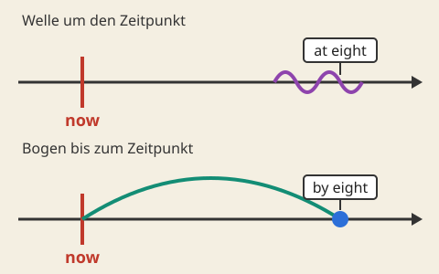

Wo bist du nächsten Samstag um acht? will be doing und will have done
Mit einem KI-Tutor lernen
Ein KI-Tutor erklärt dir diese Seite und hilft dir bei den Aufgaben. Wähl deinen Assistenten:
Mit Claude öffnen Mit ChatGPT öffnen Mit Mistral Vibe öffnen
Du nutzt dein eigenes Konto beim Anbieter. Der Assistent ist kein Angebot von lernapps.net: lernapps liefert nur Inhalte und Aufgaben. Die Wahl gilt für alle Seiten, nur auf diesem Gerät.
Welle und Bogen in der Zukunft
Aufgabe
Lösung
Etwas ist gerade im Gang. richtige Antwort
Die Welle zeigt, dass etwas läuft, zum Beispiel beim present progressive.
Etwas ist schon fertig und wirkt bis jetzt.
Das sagt der Bogen beim present perfect.
Etwas wiederholt sich immer wieder.
Das sagt die Punktreihe beim simple present.
Die Welle steht für etwas, das läuft. Auf dieser Seite liegt sie in der Zukunft.
Das kannst du danach: Du erkennst im Interview, was zu einem Zeitpunkt in der Zukunft gerade läuft und was bis dahin schon fertig ist. Und du sagst beides auf Englisch.
Interview in der Millbrook Mail
| Englisch | Deutsch |
|---|---|
| stadium | Stadion |
| final | Endspiel |
| cheer | anfeuern |
| by then | bis dahin |
| mark | korrigieren |
| I'm afraid | leider |
| hope | hoffen |
[1] Sophie: Welcome to the Millbrook Mail! Today I'm asking my friends one question: where will you be next Saturday at eight o'clock in the evening? Amir, you first.
[2] Amir: At eight I'll be sitting in the stadium! My team is playing the final, and I'll be cheering for them. By then I'll have bought my ticket, of course.
[3] Sophie: Thanks, Amir. Ellie, what about you?
[4] Ellie: This time next Saturday I'll be dancing at my cousin's party. I'll have finished my homework by then, I hope, but I won't be thinking about school!
[5] Sophie: And Peter?
[6] Peter: I'll be sleeping, I think. By eight I'll have played two matches, so I'll be very tired.
[7] Sophie: Mr Hill, our teacher, what will you be doing?
[8] Mr Hill: I'll be marking your tests, I'm afraid. By Saturday night I'll have marked about forty of them.
[9] Sophie: Thank you all. I'll be writing the article!
Die Welle und der Bogen in der Zukunft
Rechts von now liegt die Zukunft. Dort kannst du einen genauen Zeitpunkt markieren, zum Beispiel acht Uhr. Zwei Zeichen kennst du schon. Die Welle liegt um den Zeitpunkt, dann läuft etwas gerade. Der Bogen reicht von now bis zum Zeitpunkt, dann ist etwas bis dahin schon geschehen. Beim present perfect endete der Bogen bei now, hier reicht er von now bis in die Zukunft.

© CC-BY-4.0Oben liegt die Welle um den Zeitpunkt. Unten reicht der Bogen von now bis zum Zeitpunkt.
| Zeichen | Form | Beispiel |
|---|---|---|
| Welle | will be + Verb mit -ing | At nine on Monday the class will be walking to the park. |
| Bogen | will have + 3. Form | By nine on Monday the class will have walked to the park. |
Mit at ... tomorrow und this time next ... setzt du die Welle (will be doing). Mit by ... und by then zeigst du den Bogen (will have done). Bei will have kommt die 3. Form des Verbs, bei unregelmäßigen Verben also zum Beispiel written oder eaten.
Merke
will be doing sagt, was zu einem Zeitpunkt läuft. will have done sagt, was bis dahin fertig ist. Meist sagt der Zeitpunkt, welche Form du brauchst: At eight ... (Welle) oder By eight ... (Bogen). Beispiel: At ten I will be swimming. By ten I will have eaten breakfast.
Übung
Aufgabe
Lösung
Er wird schlafen. richtige Antwort
In Zeile 6 sagt Peter, dass er um acht schlafen wird.
Er wird Fußball spielen.
Fußball spielt er den ganzen Tag. Bis acht ist das schon vorbei.
Er wird im Stadion jubeln.
Das tut Amir. Er sagt es in Zeile 2.
Peter spielt den ganzen Tag Fußball und schläft um acht.
Aufgabe
Lösung
I'll have finished my homework by then. (Zeile 4) richtige Antwort
Will have finished ist der Bogen. Die Hausaufgaben sind bis dahin fertig.
I'll be cheering for them. (Zeile 2)
Das ist die Welle. Amir feuert sie gerade an, zum Zeitpunkt acht.
I'll be sleeping, I think. (Zeile 6)
Auch das ist die Welle. Peter schläft zum Zeitpunkt acht.
I'll be waiting for next week's answers! (Zeile 9)
Auch hier läuft etwas, das ist die Welle.
Will have plus 3. Form ist der Bogen, will be plus -ing ist die Welle.
Aufgabe
Wähle die richtige Form.
- Morgen um zehn Uhr sitzen wir im Zug. → At ten tomorrow we … on the train.
- Bis zehn Uhr haben wir das Zimmer aufgeräumt. → By ten o'clock we … the room.
- Nächsten Montag um vier Uhr mache ich gerade einen Test. → At four o'clock next Monday I … a test.
- Bis Freitag hat sie das Buch gelesen. → By Friday she … the book.
Lösung
- At ten tomorrow we will be sitting on the train.
- By ten o'clock we will have tidied the room.
- At four o'clock next Monday I will be doing a test.
- By Friday she will have read the book.
Aufgabe
Schreibe den ganzen Satz. Das Signalwort zeigt, ob es will be + -ing oder will have + 3. Form ist.
Tipp
Frag dich, was der Zeitpunkt sagt. Bei at oder this time läuft etwas (will be + -ing), bei by ist etwas fertig (will have + 3. Form).
- this time tomorrow · I · sit · on a plane
- by Friday · she · finish · the report
- at six tomorrow · they · cook · dinner
- by the end of the week · we · write · three tests
Lösung
- This time tomorrow I will be sitting on a plane. (auch richtig: This time tomorrow I'll be sitting on a plane.)
- By Friday she will have finished the report. (auch richtig: By Friday she'll have finished the report.)
- At six tomorrow they will be cooking dinner. (auch richtig: At six tomorrow they'll be cooking dinner.)
- By the end of the week we will have written three tests. (auch richtig: By the end of the week we'll have written three tests.)
Aufgabe
In jedem Satz steckt ein Fehler. Schreibe den Satz richtig.
- At eight tonight I will be watch a film.
- By Monday they will have sended the letter.
Lösung
- At eight tonight I will be watching a film.
- By Monday they will have sent the letter.
Aufgabe
Hör zu und schreibe, was du hörst.
- KI
- KI
- KI
Lösung
- At twelve tomorrow my parents will be driving to the seaside.
- By Friday Amir will have cleaned the whole kitchen.
- This time next week we will be lying on the beach.
Selbst sprechen und schreiben
Aufgabe
Hör zu, sprich nach und nimm dich auf. Vergleiche dann mit dem Original.
Tipp
Hör den Satz zuerst. Sprich langsam nach und achte auf will be und will have.
- Will you be working tomorrow evening?KI
- By tonight she will have painted the whole room.KI
- They will be arriving at midnight.KI
Zum Aufnehmen braucht diese Aufgabe JavaScript. Die Beispiele kannst du auch ohne anhören.
Lösung
- Will you be working tomorrow evening?
- By tonight she will have painted the whole room.
- They will be arriving at midnight.
Offene Aufgabe
Schreibe drei bis vier Sätze für das Interview der Millbrook Mail. Wo wirst du am nächsten Samstag um acht Uhr abends sein, was wirst du dann gerade tun, und was hast du bis dahin schon erledigt?
Eine gute Antwort enthält:
- Mindestens ein Satz mit will be und dem Verb mit -ing für das, was du um acht gerade tust. Nachlesen
- Mindestens ein Satz mit will have und der 3. Form für das, was bis dahin fertig ist. Nachlesen
- Die Sätze haben einen Zeitpunkt (at eight, by then). Nachlesen
- Ganze Sätze mit Verb und Punkt am Ende. (Form)
Lösung
At eight I'll be watching a film with my friends. By then I'll have done my homework. I'll have cleaned my room, too.
Wie es weitergeht
Am Wandbild hängt jetzt ein Zeitpunkt in der Zukunft mit Welle und Bogen. Damit sind die Zeitformen dieser Stufe komplett. Kapitel 7 folgt später.
Fehler gefunden oder eine Idee für diese App?